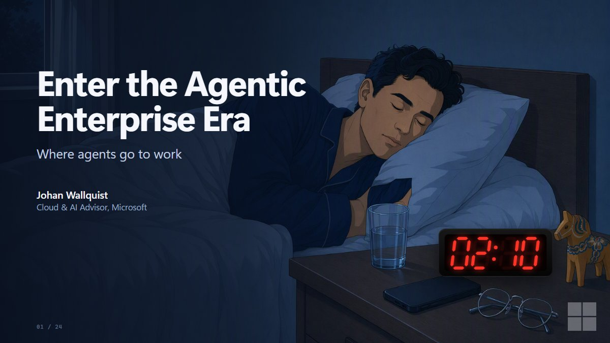

Enter the Agentic Enterprise Era
Where agents go to work.
One night at a fictional engineering company shows what it takes to run people and agents together across teams and company borders.
Building one agent is the easy part now. The hard part of the agentic enterprise is the enterprise part.
Step through with the arrow keys or by tapping the slide. Tap the left edge to go back. Slide 8 has a terminal version of the demo behind the down arrow, and M on slide 23 draws the Microsoft products by hand.
v1.0 · Audience edition without speaker notes. The companies and people in the story are fictional.